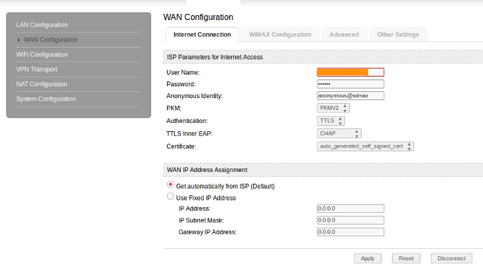
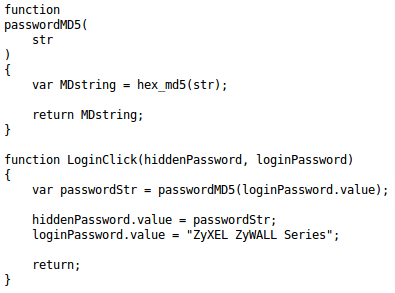
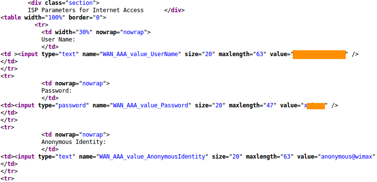
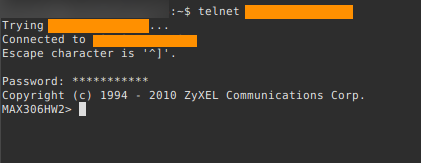
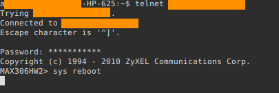

It was midnight and I was doing some research on a project I was working on when all of a sudden my internet connection "died". What? Seriously? What day is it today? My contract with my "loyal" ISP had ended. I needed to pay up again. Why could'nt internet just be free? My mind quickly went on a journey as I stood by my bedroom window and stared at the starry skies, I thought to myself, "What if this WIMAX access point I am using is vulnerable? What if I can access the internet without paying one hundred dead presidents?" A part of me said, "No, company X is a huge company. They must have really smart engineers working on their infrastructure. They are one of the countries biggest ISP so they and users like me should be safe, right?"
300000 mac Burger's please.
Like an artist under the power of inspiration I quickly got my tools necessary to test if the access point/router which I owned had any vulnerabilities which could be exploited by someone malicious. I started up my linux box and fired up airmon-ng. To my surprise I noticed something strange. The routers default wifi password was actually the mac (Media Access Control) address of the device. I had not realised that because company X did not give passwords for the routers administration page. But luckily a few weeks earlier I went to company X's offices and convinced the skinny old lady to give me the password. I made up an excuse about wanting to set up port forwading so I can access my other machines remotely when I was far from home, which was actually true. Anyways, company X sold devices with default wifi passwords that was actually the mac address and most users were not given a password for their access point/routers admin page. Which meant that most of company X's users were vulnerable including yours truly.
All one had to do is fire up airmon-ng, sniff the wifi signal of company X's router get it's mac address and use it to connect to the victims wireless network and if one's concious allows it raise hell on earth or in this case raise hell on the victims network.EAP my ass!
As interesting as the mac burger vulnerability was it did not keep me full for too long. I was still hungry for more. Since I had the "well protected" password for company X's router I decided to go in and see what the "kitchen" offered me. I logged in with the default password which by the way could be easily cracked with Cain and Abel or John the stripper, I mean uhm John the ripper! Jokes aside I went my way and found the page which hosted the configuration for Internet and wimax authentication.
Internet configuration page.
The device used EAP-TTLS for authentication. EAP stands for Extensible Authentication Protocol and is used to authenticate users on most wimax based networks. Here's how it works: a user requests connection to a wireless network through an access point (a station that transmits and receives data, sometimes known as a transceiver). The access point requests identification (ID) data from the user and transmits that data to an authentication server. The authentication server asks the access point for proof of the validity of the ID. After the access point obtains that verification from the user and sends it back to the authentication server, the user is connected to the network as requested. Well that's how it supposed to be. I thought to myself. If every access point uses the same admin password than someone malicious could simply write a tool to grab all vulnerable users wimax authentication details and test if EAP was working as it should on the device. And so I fired up python and wrote the tool LulZye.py to grab authentication details just like a malicious individual would.
After an hour or so LulZye was ready for action and passed the ip range for it to scan. I found the IP range to scan by using whois on company X's ip. and noticed that most devices were on the same subnet. eg 196.210.61.0 to 196.210.127.255. So I informed LulZye the ip range to scan, eg 196.210.61.0/24 and if it found a device it would first check if it was vulnerable and attempt a login with the "well protected password" which was actually stored as a md5 hash in the device so I had to send it using the md5 format.
password being stored as an md5 hash.
The tool than attempts to get the wimax authentication of the device by scraping the pages entire html structure and finding the username which was something like 279098122, the password, which was somewhat hidden but the great engineers that made the device actually stored it in the value attribute of the input tag like such: "input type="text" ... value="x98212">/" as well as the devices mac address which displayed in the devices detail page. After 15 minutes LulZye had found over 1000 vulnerable devices and had stored authentication information for each and every one of them. I smiled as I opened the file holding the stored authentication details.
created a simple algorithm to scrape the information on this page.
Now I had the key to the safe. All I thought I had to do was: 1. Add the username and password I had borrowed from another device and use it on my device. 2. Restart the router. 3. Get Internet and lmao while I downloaded Transcendense a thousand times.
Sometimes as pentesters we assume things and I had assumed wrong. After repeating the same thing a few times I had no internet and EAP was not put to it's knees. I was about to quit but suddenly a bulb lit up in my head and felt a rush of adrenaline going through my body as I remembered how EAP works! One big mac burger please! I remembered that I needed a few more things to authenicate. After thinking much I ended up with the following scheme: 1.A Valid mac address assigned to a especific username 2. A Valid Certificate 3. Valid username 4. Valid password. But there was one question, How do I change the devices mac address so I can effectively impersonate a valid user and thus get internet access?
A cup of coffee and telnet
I had to pull my socks and wear my thinking cap to figure this one out. I stood in front of the screen half asleep. It was around 3 am so I decided to make myself a cup of coffee. While doing that I asked myself how do I change the mac? I knew the mac was like a devices fingerprint and the only way to change a finger print is if you change the finger or atleast make it seem as if you did. I thought I should do some reconassaince to better understand my "enemy". I decided to find out about the devices manufacturer which is Zyxel. I visited some of their websites to see if they had information on the device but that was to no avail.
I than used nmap to scan the companies entire ip range to see if I could find anything usesful. And boy did I find treasure! I found an ftp server which allowed anonymous login and there I found a plethora of manuals for all their devices. Detailing everything about how their devices work. My mission was near completion! I searched for something that had to do with changing the devices mac address and found something very interesting.
There are two MAC addresses reserved for each Simple CPE. One is for LAN, and the other is for WiMAX. They are consecutive numbers. When Multi-User CPE powers up, it will check and write the MAC address in to WiMAX card. This address will also be saved in WiMAX card’s flash ROM. If you try to swap several WiMAX cards in a Multi-User CPE, it might cause all cards share same MAC addresses.
I also found out that the device used telnet by default and that all devices had a cli interface. Logically if it had a cli interface it must surely have commands and I went searching for those too. The latter part of the manual listed all commands and their functions, since my interest was to change the mac I scrolled down the page and found exactly what I wanted. A command to change the mac of the device, which seemed to me like the final piece of the puzzle. I had to run telnet and point to the devices ip like such: telnet 192.168.1.1 and provide the default password for authentication.
The Devices cli interface via telnet.
I was then finally inside devices cli interface and used the command I had learnt to change the mac. I waited anxiously as the device restarted. 2 minutes later nothing happened. I was distraught! What! Nothing? No ways! I than remembered that EAP would not allow multiple users with the same mac and net configurations to access the network at the same time. So I thought I should find a way to somehow switch off the victims device just like a malicious person would. I noticed the device automatically restarted after I changed the mac. So an option would be restarting the device using a command I had found in the manual.
Restarting victim device using it's cli interface.
After a few minutes I tried pinging google.com and amazingly! I had sucessfully exploited a vulnerability in company X's security procedures. I congratulated myself on the achievemenet and wrote all the steps down so I can tell company X about the problem.
Get out! We are the countries biggest Telecoms company!
Next morning I was woke up by a nagging homo-plyo-talk-alot-o-saurus (My sister). She was going on about something. All I thought was, "Is the internet still working as it should?" I logged onto my linux machine and pinged google.com and voila it was working very well. An hour or so later I got dressed up in my "yellow suite" I went to company X's offices and asked to talk to someone with authority. They looked at me like a dirty dog. I laughed inside because I find it funny how people can be so ignorant when in the reality they don't know much. A technician came out of a room and walked towards me like the presidents son. He asked me what I had to say. I said, "That I had found a vulnerability in the companies device that would allow a malicious person to steal customers internet connection." His reply? an obnoxious "Get out! We are the countries biggest Telecoms company! Our infrastructure is totally secure! We don't have time for games. "
What company X can do to secure themselves.
Hire Penetration testers! Company X failed to test the security of their infrastructure and devices. The old skinny looking lady was susceptable to social engineering and had given away their only protection at the time, the password for the devices admin page. Company X left all it's customers vulnerable to impersonation attacks.
If Company X had hired penetration testers to test the security of their devices they would have known about these possible flaws and would have strengethened their security by a huge margin. I truly believe that in the age we live in most companies are supposed to have security advisors to identify flaws in their systems. Programmers should have atleast some knowledge in security to deploy secure code. Some of the things company X can do to protect themselves is:
1.Block all traffic on port 23 so a malicious individual can not access the devices cli interface. Company X can do this by configuring a Load Balancer to block telnet traffic.
2.Have technicians change the customer's admin passwowrds when customers makes the payment.
3.Block http traffic from the internet and only allow users inside the private network to connect to admin page.
4.Be more open with customers regarding security issues and listen to people with helpful information regarding device security even rewarding them if necessary. Learn from facebook, google and many other companies. There is so much more to gain that way.
Tweet